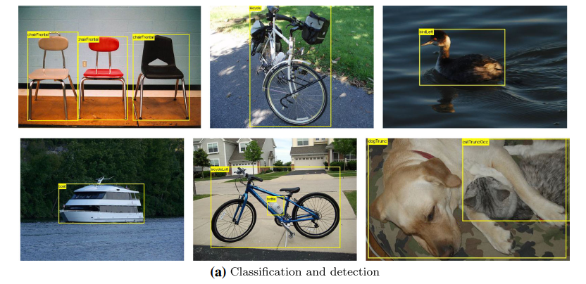
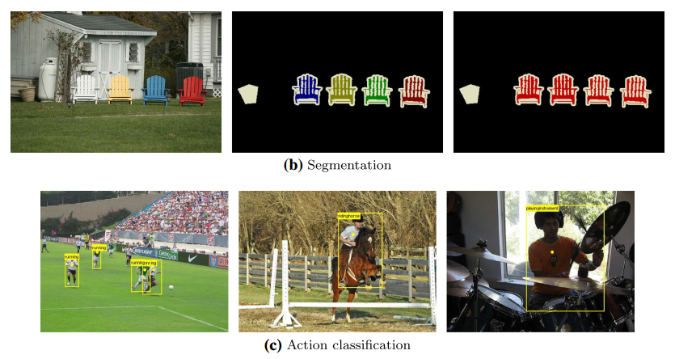
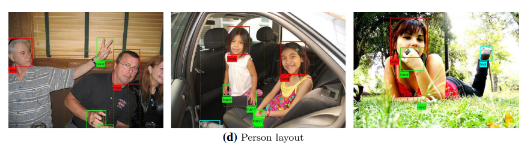
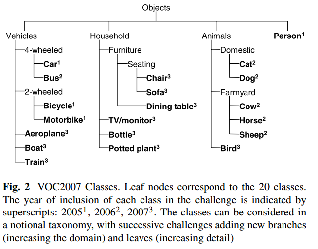
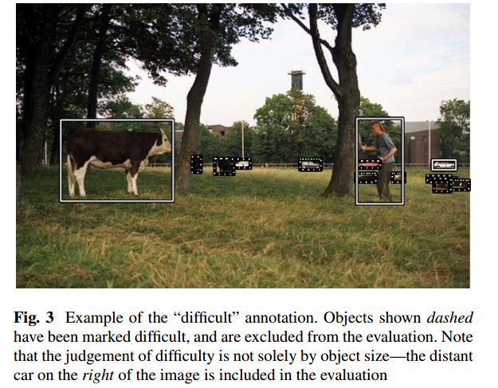

1.简介
PASCAL VOC全称是The PASCAL Visual Object Classes,是一个计算机视觉的挑战赛，包含图像分类、目标检测、图像分割等子任务，很多有名的paper和网络都基于此数据集进行实验。



2.数据集概况
下图展示的是PASCAL VOC 数据集的20个类别及其层级结构:

3.数据标注信息
该数据集中图片的ground-truth标注信息采用的是XML的组织方式，遵从统一的标准，详情参见
下面以000035.jpg和000035.xml为例进行介绍：1
2
3
4
5
6
7
8
9
10
11
12
13
14
15
16
17
18
19
20
21
22
23
24
25
26
27
28
29
30
31
32
33
34
35
36
37
38
39
40
41
42
43
44
45
46
47
48
49
50
51
52
53
54
55
56
57
58
59
60
61
62
63
64
65
66
67
68<annotation>
<folder>VOC2007</folder>
<filename>000035.jpg</filename>
<source>
<database>The VOC2007 Database</database>
<annotation>PASCAL VOC2007</annotation>
<image>flickr</image>
<flickrid>338126319</flickrid>
</source>
<owner>
<flickrid>GabaGaba</flickrid>
<name>Gabba Gabba</name>
</owner>
<size>
<width>500</width>
<height>375</height>
<depth>3</depth>
</size>
<segmented>0</segmented>
<object>
<name>person</name>
<pose>Unspecified</pose>
<truncated>1</truncated>
<difficult>0</difficult>
<bndbox>
<xmin>1</xmin>
<ymin>96</ymin>
<xmax>191</xmax>
<ymax>361</ymax>
</bndbox>
</object>
<object>
<name>person</name>
<pose>Frontal</pose>
<truncated>1</truncated>
<difficult>0</difficult>
<bndbox>
<xmin>218</xmin>
<ymin>98</ymin>
<xmax>465</xmax>
<ymax>318</ymax>
</bndbox>
</object>
<object>
<name>person</name>
<pose>Unspecified</pose>
<truncated>1</truncated>
<difficult>1</difficult>
<bndbox>
<xmin>468</xmin>
<ymin>195</ymin>
<xmax>500</xmax>
<ymax>317</ymax>
</bndbox>
</object>
<object>
<name>diningtable</name>
<pose>Unspecified</pose>
<truncated>1</truncated>
<difficult>1</difficult>
<bndbox>
<xmin>3</xmin>
<ymin>304</ymin>
<xmax>500</xmax>
<ymax>375</ymax>
</bndbox>
</object>
</annotation>
- 前面的
filename,folder,source,owner这些都是图片的版权所属信息了，和我们的任务关系不大。 size：包含了图片的宽度width、height以及通道数depthsegmented：是否分割object：每个object字段只标注一个物体，该字段中又包括name: object的类别名称pose：object的拍摄角度，可选的参数有front,rear,left,right,unspecifiedtruncated: object是否被截断，或者被遮挡（超过15%）difficult：object检测的难易程度，难-1，不难-0，主要根据object的大小和图片的质量综合确定bndbox：标定object左上角和右下角两个点的4个坐标
其中difficult的示例如下：
